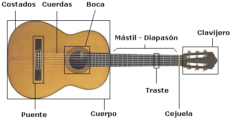
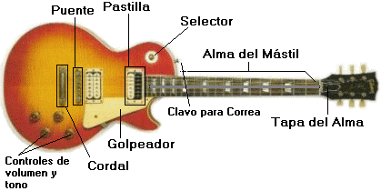
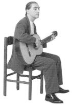
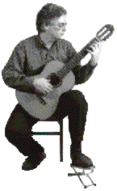

Para empezar
Te aconsejo que comiences con una guitarra acústica con cuerdas de nylon, si ya tienes una guitarra eléctrica está bien pero ponlo en un tono limpio (es decir, sin ponerle ningún efecto).
No trates de ir demasiado rápido, El hecho de que puedas avanzar de una lección a otra de una manera rápida (con sólo un click) no significa que estás listo para la siguiente. Trata de entender y dominar cada lección que tomes antes de avanzar.
Ten paciencia y constancia. Toma un tiempo determinado cada día (aunque sea corto) y trata de ser consistente. No se vale desanimarse, toma tu propio paso, poco a poco. Trataré de ser lo más motivante posible, pero si no te comprometes contigo mismo a aprender entonces estaremos perdiendo el tiempo.
Partes de la guitarra
Tenemos que conocer las partes de las que consta nuestra guitarra: 
Para una guitarra eléctrica:

Posición al tocar
Posición normal
Apoya la cintura de la guitarra en tu pierna derecha y coloca tu antebrazo derecho sobre el borde de la caja. 
Posición clásica
Apoya la cintura de la guitarra en la pierna izquierda, con el mástil inclinado hacia arriba, de manera que la mano izquierda llegue con facilidad al diapasón. El antebrazo derecho se apoya en el borde de la caja. En esta posición el peso de la guitarra queda bien equilibrado. El pie izquierdo se apoya en un apoyapies para que la pierna quede un poco levantada. 
De pie
Cualquier guitarra se puede tocar de pie colgándola con una correa. Es importante que el instrumento cuelgue con el peso hacia el cuerpo y con un buen centro de gravedad, para que las manos y los brazos puedan moverse con libertad. Muchos guitarristas modernos tienden a colgarse la guitarra muy baja por motivos estéticos, pero así resulta más difícil tocar y no es recomendable para principiantes. Para una mayor soltura de la mano izquierda, el mástil debe de quedar inclinado hacia arriba.
Ir a la siguiente sección: Afinación